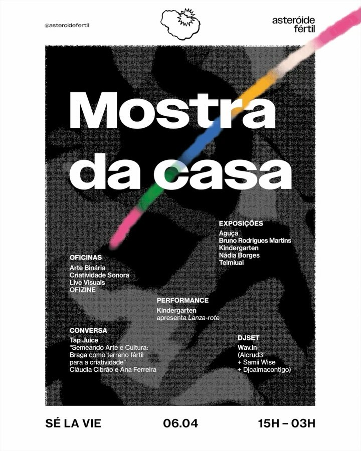

A Mostra da casa foi a primeira mostra de artistas da Asteróide Fértil, realizada no Sé La Vie, no centro de Braga. Durante um dia, o espaço funcionou como um pequeno festival cultural, reunindo artistas independentes da região e a comunidade em torno de oficinas, uma exposição coletiva, uma conversa, uma performance e um DJ set.
De tarde, quatro oficinas orientadas por Francisco Gaspar, incalma, Wav.in e Coletivo Kindergarten abriram o dia a todas as idades, seguidas de uma conversa da Tap Juice sobre a criação artística em e a partir de Braga, com Ana Ferreira e Cláudia Cibrão. A exposição coletiva reuniu obras de cinco artistas e coletivos da região norte, da ilustração à media art, incluindo a primeira apresentação da instalação la.santa, do Coletivo Kindergarten, e de 0001, de Bruno Rodrigues Martins.
À noite, o Coletivo Kindergarten apresentou a performance audiovisual Lanza-rote e a Wav.in assegurou o DJ set, com Alcrud3, Samii Wise e Djcalmacontigo. A entrada foi gratuita.
